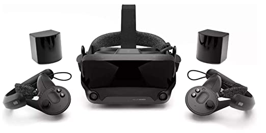

What do I want to do with my future computer setup?
The short answer is My Ultimate Computer Setup (within budget) will be amazing. I have been mostly utilizing old, repurposed and mainly a few generations old technology. Most of my priorities have shifted to family and life expenses. This also takes a lot of my time too.
My Ultimate Computer Setup for me would replace most if not all of my old computers in my house. Currently I have 4 always on and running computers, Unraid Server, Blue Iris Server, pfSense, and my main workstation. I also share a laptop with my wife. The computer I will need to spec out will require enough CPU horsepower to replace the Unraid, blue iris and main workstation (PFsense will be separate still). I want this computer to be able to support full Virtual Reality operations/game play, be able to transcode full HD streams for at least 6-8 users at the same time and also be able to manage and provided 24/7 recording for my camera system with full motion detection and reporting abilities.
That is going to be a lot of research and figuring out. My goal is to get a computer for under $2000 not to include the VR kit, power supply or any other peripherals/accessories. This will require good deals, and most likely shopping at multiple locations/online stores. In the end, not sure when I will be able to get My Ultimate Computer Setup but I can still have fun planning it out. Plus it was either I plan out a computer setup or a HD Truck setup!
What is Unraid and why do I want it?
Unraid OS is a "allows sophisticated media aficionados, gamers, and other intensive data-users to have ultimate control over their data, media, applications, and desktops, using just about any combination of hardware." (unraid.com) I currently have it on an old computer I bought on ebay like 4 years ago and is still running strong. It is great as it gives me the ability to setup multiple shared and backups folders, use dockers to support specific applications such as PLEX, Home Assistant and NextCloud. I have also tried to use it for Virtual Machines but sadly it is not powerful enough CPU wise to support all of it at the same time. I could speak to so much more when it comes to the nice features of Unraid but the main goal for using Unraid in my next build is to try to use it as the primary Operating System and Virtual machine my main computer within using pass-through to support everything from everyday operations to Virtual Reality Equipment and play!
What are the minimum Computer Specification I will want/require?
A multi-purpose computer/server will require a Minimum Hardware Requirement of:
- CPU 8 Core 3.2 Ghz or more/faster
- RAM 16GB or more
- 500 GB or larger disk drive (NVMe)
- Duel port 1gig compatible network interface cards (Intel)
- Motherboard to support minimum of 8 SATA connections
- Nvidia GTX 1070 or better
- Computer Case to support 8+ HDDs and a full size Graphics Card/li>
What is Virtual Reality and why do I want it?
Virtual Reality (VR) is an amazing technology and the popularity of it as grown a ton over the last few years. VR is basically that a virtual environment that a user can enter by putting on headgear and holding controllers. The immersive nature that some applications have reached is impressive and I would love to have that at home. VR is not all just for fun and games but can also be used for workstation operations and for a good bit on online virtual training courses that walk you through steps in VR. (But I am more into in first for the fun!)
Systems requirements to run VR range widely based on the application being utilized. This is an important fact that I need to research on to build and create an amazing and much better overall user experience. Quality and resolution are important, and for a lot of people the refresh rate can make or break a users experience in VR. I would like my computer to be able to support the Valve Index as it is one of the best overall units/kits on the market today.
